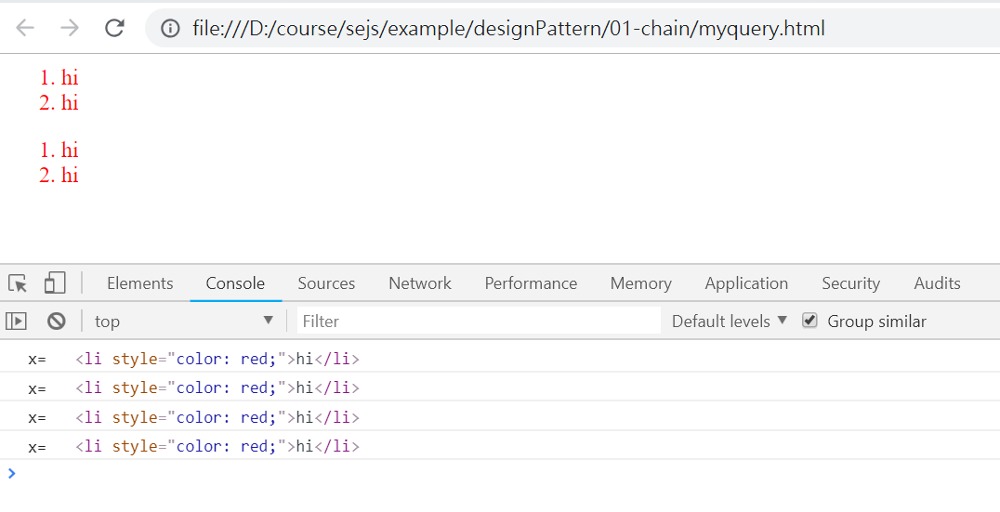

設計模式 -- 以 JavaScript 為例
設計法則
良好的模組化是提高程式品質的好方法，在設計函數模組時，記得遵循一些原則。像是：
- KISS 原則: 能簡單就不要複雜的
- KISS: Keep It Simple and Stupid
- SRP 原則： 單一的函數只做一個功能。
- SRP : Single Responsibility Principle
- 提高內聚力，降低附著力。
- 變數命名應有意義，不要只是為了求短。
- 盡量少用全域變數。
- 程式風格要盡可能統一。
- 恰當的註解，並保持註解與程式的一致性。
- 避免使用奇技淫巧。
另外、物件導向也有一些設計準則可以依循
- 慎用繼承，可改用組合 (Composition) 代替
- LSP 原則: 子型態必須可以被父型態取代
- LSP : Liskove Substitution Principle
- 正例: Shape <= Circle, Rectangle
- 反例: Rectangle <= Square
- PLK 最小知識原則: 人命令狗，但不要命令狗的腿
- PLK: Principle of Least Knowledge
- 狗的腿由狗自己去命令操控
- 好萊塢原則: 低階元件不要呼叫高階元件
- Hollywood Principle
- 而是像驅動程式一樣，先註冊後由高階元件呼叫低階元件。
- OCP 開放封閉原則: 模組必須容易被改變，但卻不需要大改
- OCP: Open Closed Principle
- 使用依賴性注射、多型之類的技巧達成
- DIP 依賴反向原則：高階模組不應依賴低階模組，兩者必須依賴抽象層運作。
- DIP : Dependency Inversion Principle
- IoC 控制反轉原則: 使用依賴注射 DI 完成。
- IoC: Inversion of Control
- DI : Dependence Injection (以下列出三種 DI)
-
- 建構子注入 (Constructor Injection)
-
- 設定屬性注入 (Setter Injection)
-
- 介面參數注入 (Interface Injection)
- SOI 介面分離原則: 採用 interface 避免多重繼承
- SOI: Separation of Interface
- 迪米特法則： 盡量不要與無關的物件產生關係。
- 對被呼叫函式傳回的物件，不該再呼叫該物件內的方法
- 像是 ctxt.getOptions().getScratchDir().getAbsolutePath() 就違反迪米特法則。
- 但是 jQuery 那類傳回自身的鏈式語法，並沒有違反迪米特法則。
設計模式列表
關於經典書籍 Design Patterns - Elements of Reusable Object-Oriented Software 中所描述的那些設計模式，筆者就不多寫了，您可以閱讀下列書籍了解那些經典的物件導向模式。
進階閱讀：
- 图说设计模式 (讚！)
- 菜鳥教程：设计模式
- 非關語言: 設計模式
JavaScript 的設計模式
在本文中，我們將就 JavaScript (JS) 常見的一些《設計模式》進行解說，這些模式都是對 JS 特別實用的模式。
我們所選出的 JS 專屬模式如下：
- Callback《回呼》 : o.call(..., f)
- Promise : 一種特殊的 callback 方式
- async / await : 將 callback 轉為類似傳統的循序式寫法。
- Chaining《鏈式語法》 : o.f().g().h()
- MyQuery : 類似 jQuery
- BDD : 創造 expect().not.to.contain(....) 這類的語法
- Pub/Sub《發布/訂閱》: pub(channel), sub(channel).on(event)
- Message Queue
- Middleware《中間件》 : Framework.use(middleware)
- Koa 的中間件設計
- MVC《三層式結構》
- MVC: Model-View-Controller
Callback《回呼》
o.call(..., f)
範例: Callback 檔案讀取
const fs = require('fs')
fs.readFile(process.argv[2], 'utf8', function (err, text) {
if (err) {
console.log('Error:', err)
return
}
console.log('text=', text)
})
執行結果
$ node io abc.txt
Error: { [Error: ENOENT: no such file or directory, open 'D:\course\se107a\example\designPattern\00-callback\abc.txt']
errno: -4058,
code: 'ENOENT',
syscall: 'open',
path:
'D:\\course\\se107a\\example\\designPattern\\00-callback\\abc.txt' }
$ node io io.js
text= const fs = require('fs')
fs.readFile(process.argv[2], 'utf8', function (err, text) {
if (err) {
console.log('Error:', err)
return
}
console.log('text=', text)
})範例: Promise 網頁抓取
const W = (module.exports = {})
const http = require('http')
W.get = function (url) {
return new Promise(function (resolve, reject) {
http
.get(url, function (res) {
let chunks = []
console.log('Got response: ' + res.statusCode)
res.on('data', function (chunk) {
chunks.push(chunk)
})
res.on('end', function () {
resolve(chunks.join())
})
})
.on('error', function (e) {
reject(e)
})
})
}
主程式 1 : 使用 promise.then 的方式回呼
const web = require('./web')
web
.get(process.argv[2])
.then(function (text) {
console.log(text)
})
.catch(function (error) {
console.log('error:' + error)
})執行結果：
$ node mainThen http://railway.hinet.net/Foreign/TW/index.html
Got response: 200
<!DOCTYPE html>
...
<title>交通部臺灣鐵路管理局-網路訂票系統
...
</body>
</html>主程式 2 : 使用 async/await 的漂亮語法
const web = require('./web')
async function main (url) {
try {
let text = await web.get(url)
console.log(text)
} catch (error) {
console.log('error:' + error)
}
}
main(process.argv[2])執行結果：
$ node mainAwait http://railway.hinet.net/Foreign/TW/index.html
Got response: 200
<!DOCTYPE html>
...
<title>交通部臺灣鐵路管理局-網路訂票系統
...
</body>
</html>Chaining《鏈式語法》
- o.f().g().h()
MyQuery -- 簡化版 jQuery 的鏈式語法
myquery.js 模組
const $ = function (filter) {
let q = new Q()
return q.get(filter)
}
class Q {
constructor () {
this.filter = ''
this.nodes = window.document
}
get (filter) {
this.filter += ' ' + filter
this.nodes = document.querySelectorAll(this.filter)
return this
}
each (f) {
for (let node of this.nodes) {
f(node)
}
return this
}
}
主網頁: myquery.html
<html>
<body>
<ol>
<li>item1.1</li>
<li>item1.2</li>
</ol>
<ol>
<li>item2.1</li>
<li>item2.2</li>
</ol>
<script src="myquery.js"></script>
<script>
$('ol').get('li').each((x) => {
x.innerHTML = 'hi'
x.style.color = 'red'
console.log('x=', x)
})
</script>
</body>
</html>開啟 myquery.html 會看到下列情況：

這是 myquery.html 中下列程式的作用：
$('ol').get('li').each((x) => {
x.innerHTML = 'hi'
x.style.color = 'red'
console.log('x=', x)
})案例: BDD 測試框架的鏈式語法
const O = {}
const expect = function (obj) {
O.obj = obj
return O
}
O.to = O
O.be = O
O.a = O
O.include = function (child) { return O.obj.indexOf(child) >= 0 }
O.html = function () { return O.obj.indexOf('<html>') >= 0 }
console.log(expect('<html><body><body></html>').to.be.a.html())
console.log(expect('<html><body>hello!<body></html>').to.include('hello'))
console.log(expect('<html><body>hello!<body></html>').to.include('world'))
執行結果
$ node bdd.js
true
true
falsePub/Sub《發布/訂閱》
- pub(channel), sub(channel).on(event)
案例: 以事件驅動創建 Pub/Sub Message Queue
var events = require('events')
class MQ {
constructor () {
this.emitter = new events.EventEmitter()
}
pub () {
this.emitter.emit(...arguments)
}
sub (event, f) {
this.emitter.on(event, f)
}
}
var mq = new MQ()
mq.sub('mbox1', (msg) => { console.log('mbox1:', msg) })
console.log('20181008')
mq.pub('mbox1', 'You have a meeting today')
console.log('20181009')
mq.pub('mbox1', 'Nothing important today')執行結果:
$ node pubsub.js
20181008
mbox1: You have a meeting today
20181009
mbox1: Nothing important todayMiddleware《中間件》
- Framework.use(middleware)
var app = {
ctx: { port: 3000, name: 'myapp' },
jobList: []
}
app.use = function (job) {
app.jobList.push(job)
}
app.run = function () {
for (let job of app.jobList) {
job(app.ctx) // 1. showCtx(app.ctx) 2. hello(app.ctx)
}
}
function showCtx(ctx) {
console.log('%j', ctx)
}
function hello(ctx) {
console.log('hello!')
}
app.use(showCtx)
app.use(hello)
app.run()執行結果:
$ node myKoa
{"port":3000,"name":"myapp"}
hello!範例: Koa 原始碼的中間件設計
// ...
use(fn) {
if (typeof fn !== 'function') throw new TypeError('middleware must be a function!');
if (isGeneratorFunction(fn)) {
deprecate('Support for generators will be removed in v3. ' +
'See the documentation for examples of how to convert old middleware ' +
'https://github.com/koajs/koa/blob/master/docs/migration.md');
fn = convert(fn);
}
debug('use %s', fn._name || fn.name || '-');
this.middleware.push(fn);
return this;
}
// ...
callback() {
const fn = compose(this.middleware);
if (!this.listenerCount('error')) this.on('error', this.onerror);
const handleRequest = (req, res) => {
const ctx = this.createContext(req, res);
return this.handleRequest(ctx, fn);
};
return handleRequest;
}其中的關鍵用到 koa-compose
原始碼: https://github.com/koajs/compose/blob/master/index.js
function compose (middleware) {
if (!Array.isArray(middleware)) throw new TypeError('Middleware stack must be an array!')
for (const fn of middleware) {
if (typeof fn !== 'function') throw new TypeError('Middleware must be composed of functions!')
}
/**
* @param {Object} context
* @return {Promise}
* @api public
*/
return function (context, next) {
// last called middleware #
let index = -1
return dispatch(0)
function dispatch (i) {
if (i <= index) return Promise.reject(new Error('next() called multiple times'))
index = i
let fn = middleware[i]
if (i === middleware.length) fn = next
if (!fn) return Promise.resolve()
try {
return Promise.resolve(fn(context, dispatch.bind(null, i + 1)));
} catch (err) {
return Promise.reject(err)
}
}
}
}使用範例
MVC《三層式結構》
- MVC: Model-View-Controller
範例: 經典網誌系統 BlogMVC
範例請參考 BlogMvc